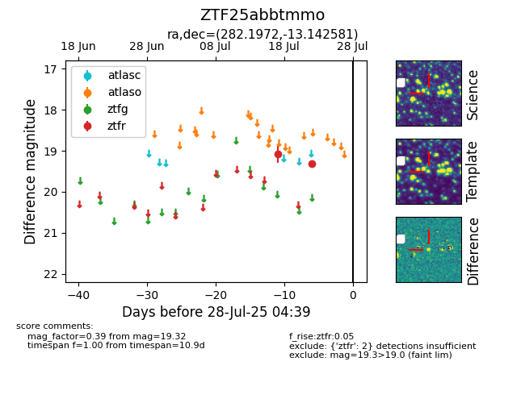

Target ZTF25abbtmmo at 2025-07-28 04:39, see:
FINK: fink-portal.org/ZTF25abbtmmo
Lasair: lasair-ztf.lsst.ac.uk/objects/ZTF25abbtmmo
ALeRCE: alerce.online/object/ZTF25abbtmmo
alt names
ZTF25abbtmmo (ztf,fink)
coordinates:
equatorial (ra, dec) = (282.1972,-13.14258)
galactic (l, b) = (20.9028,-5.37434)
photometry
last ztfr=19.32
2 ztfr detections
